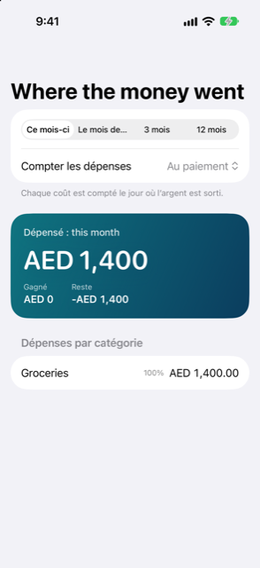

Guide › Aperçu
Où est passé l’argent
Les dépenses par catégorie, ce mois-ci et le mois dernier.
Où est passé l’argent est le rapport de dépenses de Damla. Il montre ce que vous avez dépensé, ce que vous avez gagné et ce qu’il reste, sur la période que vous choisissez, par mois et par catégorie.

Quand l’utiliser
- Vous voulez voir les plus grosses dépenses de ce mois-ci, et comment elles se comparent au mois dernier.
- Vous voulez voir une année de dépenses par mois, pour repérer les périodes chargées.
- Vous avez corrigé une transaction et vous voulez vérifier comment vos rapports ont changé.
- Vous voulez voir ce qui est entré autant que ce qui est sorti, sur un seul écran.
Étape par étape
- Ouvrez l’onglet Aperçu (le quatrième des cinq onglets).
- Touchez Où est passé l’argent en haut d’Aperçu. La ligne montre déjà les dépenses de ce mois-ci, et celles du mois dernier.
- Choisissez une période en haut : Ce mois-ci, Le mois dernier, 3 mois ou 12 mois.
- Sous Période, utilisez Compter les dépenses pour choisir le jour auquel une dépense est rattachée.
- Lisez la grande carte : Dépensé pour la période, avec Gagné et Reste à côté.
- Faites défiler pour les graphiques et les listes, décrits plus bas.
Comment les dépenses sont comptées
Deux sélecteurs se trouvent en haut du rapport : Période, et Compter les dépenses.
Au paiement compte chaque dépense le jour où l’argent est sorti. Un achat par carte compte le jour où vous avez utilisé la carte, pas le jour où vous avez payé la facture de la carte. C’est la vue habituelle de ce qui s’est passé.
Quand cela s’applique étale les dépenses annuelles ou payées d’avance sur les mois qu’elles couvrent — les mois que vous avez indiqués à l’entrée comme période qu’elle paie. Une période qui commence le premier jour d’un mois et se termine le dernier jour d’un mois est comptée en parts égales. Toute autre période est comptée au prorata des jours de chaque mois. C’est la vue habituelle pour comparer des mois, pour qu’un paiement inhabituel ne domine pas un mois.
Ce qu’il y a à l’écran
- Carte Dépensé : le total dépensé sur la période, avec Gagné et Reste (gagné moins dépensé) à côté.
- Par mois : un graphique en barres des dépenses, une barre par mois. Il apparaît quand la période contient des dépenses ou des revenus sur plus d’un mois.
- Un graphique en anneau : comment les dépenses se répartissent entre les catégories, les plus grosses parts d’abord. Il apparaît quand il y a plus d’une catégorie de dépenses.
- Dépenses par catégorie : une liste avec le total de chaque catégorie et sa part des dépenses en pourcentage, la plus grosse d’abord. Les catégories avec des sous-catégories montrent leurs parties en dessous.
- Revenus : ce qui est entré, par catégorie de revenus. Cette section n’apparaît que si la période contient des revenus.
- Dépensé pour : l’argent que vous avez enregistré comme dépenses pour une autre personne, listé par personne. Cette section n’apparaît que si vous avez enregistré des dépenses pour quelqu’un.
Si rien n’a été dépensé sur la période, la liste dit Aucune dépense sur cette période.
Un compte à la fois
Le même rapport s’ouvre aussi pour un seul compte. Dans l’onglet Comptes, ouvrez un compte qui montre une carte — une banque, une épargne, un portefeuille, une carte de crédit ou un prêt. Touchez la carte pour la retourner, puis touchez Dépenses au dos. Le rapport ne couvre alors que les entrées qui touchent ce compte, et le nom du compte est le titre de la page. Les placements, les achats échelonnés et les personnes ouvrent leurs propres écrans à la place.
Bon à savoir
- Vous pouvez ajouter, renommer et retirer des catégories dans Réglages sous Catégories. Touchez Ajouter, touchez une catégorie et modifiez Nom, ou balayez-la et touchez Retirer. Le rapport suit vos modifications.
- Les achats par carte comptent le jour où vous avez utilisé la carte, pas quand le relevé a été payé. Déplacer de l’argent entre vos propres comptes n’est jamais une dépense ni un revenu.
- L’anneau dessine au plus les huit plus grandes catégories. Les autres apparaissent quand même dans les totaux et dans la liste en dessous.
- Ce rapport est le récit de ce qui s’est passé. Il donne des informations, pas des conseils sur ce qu’il faut dépenser.
Voir aussi
Quelque chose n’est pas clair ou manque ? Écrivez à support@raveniq.ai en indiquant la page.